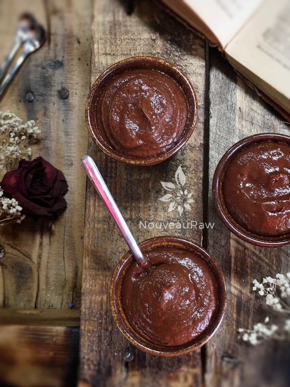

Chocolate Banana Pudding

raw / vegan / gluten-free / nut-free
Is it possible to have too many chocolate pudding recipes? I don’t think so. I love the fact that there are so many wonderful and healthy versions that we can make based on what ingredients a person might have on hand.
I wanted to increase the nutritional status of this pudding, so I added a protein powder to it. This is optional, and you can use your favorite brand.
Store-bought pudding is made up of; Milk Skim, Water, Sugar, Cottonseed Oil Partially Hydrogenated, Cocoa Processed With Alkali, Contains less than 0.50.5% of Flavor(s) Natural & Artificial, Salt, Sodium Stearoyl Lactylate, Vitamin A Palmitate, Vitamin D.
I think I like my “instant” pudding better. You decide. :)
Ingredients:
yields 3 1/2 cups
Preparation:
- In the blender combine the coconut milk, bananas, chia seeds, maple syrup, cacao, salt, and protein powder. Blend until creamy.
- Pour into serving bowls/cups/or jars and place in the fridge to chill. Wait about 30 minutes for it to set up.
The Institute of Culinary Ingredients:
- To learn more about maple syrup by clicking (here).
- What is raw cacao powder?
- What is Himalayan pink salt and does it really matter? Click (here) to read more about it.

© AmieSue.com